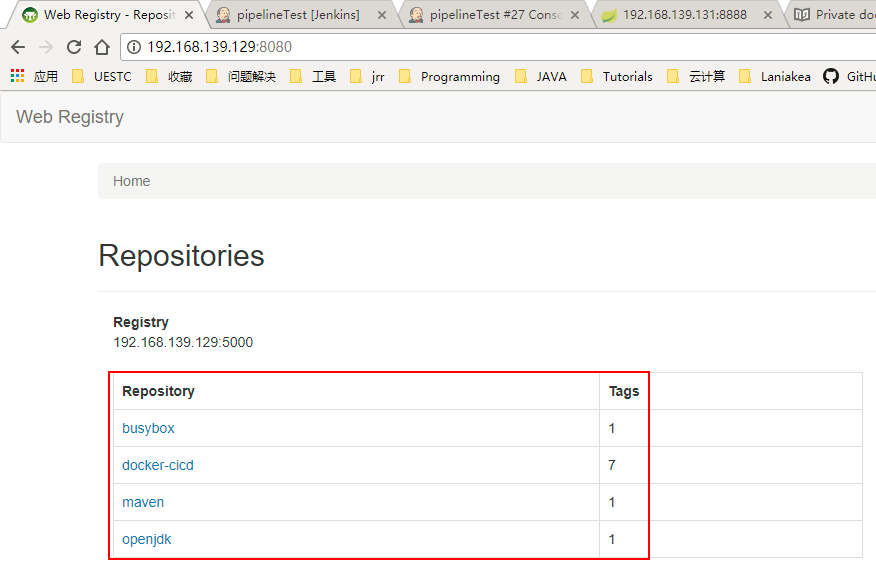

Docker提供了开放的中央仓库dockerhub，同时也允许我们使用registry搭建本地私有仓库。搭建私有仓库有如下的优点：
- 节省网络带宽，提升Docker部署速度，不用每个镜像从DockerHub上去下载，只需从私有仓库下载就可；
- 私有镜像，包含公司敏感信息，不方便公开对外，只在公司内部使用。
搭建私有仓库
下载 registry 镜像
docker pull registry
启动容器
docker run -d --name registry-jrr -p 5000:5000 --restart=always -v /opt/data/registry:/tmp/registry registry
简单解释：
-p：将容器的5000端口映射到宿主机的5000端口
--restart：docker服务重启后总是重启此容器
--name：容器的名称
-v：将容器内的/tmp/registry映射到宿主机的/opt/data/registry目录
验证私有仓库功能
sudo docker pull busybox //从DockerHub拉取测试镜像
sudo docker tag busybox registry_ip:5000/busybox //给测试镜像打上私有仓库标签
sudo docker push registry_ip:5000/busybox //上传镜像至私有仓库
sudo docker pull registry_ip:5000/busybox //从私有仓库拉取镜像
可能出现的push错误
$ docker push 192.168.139.129:5000/busybox
The push refers to a repository [192.168.139.129:5000/busybox]
Get https://192.168.139.129:5000/v2: http: server gave HTTP response to HTTPS client
这是因为Docker在1.3.x之后默认docker registry使用的是https，为了解决这个问题，需要修改/etc/docker/daemon.json文件，在文件中添加：
"{ "insecure-registries":["192.168.139.129:5000"] }"
然后重启docker
$ systemctl restart docker
查看私有仓库镜像
root@ubuntu:/home/jrr# curl -XGET http://192.168.139.129:5000/v2/_catalog
{"repositories":["busybox","docker-cicd","maven","openjdk"]}
root@ubuntu:/home/jrr# curl -XGET http://192.168.139.129:5000/v2/docker-cicd/tags/list
{"name":"docker-cicd","tags":["26","22","24","21","25","23","27"]}
root@ubuntu:/home/jrr# curl -XGET http://192.168.139.129:5000/v2/maven/tags/list
{"name":"maven","tags":["3.5-alpine"]}
搭建WEB服务
私有仓库搭建好了，为了方便查看仓库里的镜像，利用第三方镜像搭建一个web服务。
下载镜像
$ docker pull hyper/docker-registry-web
启动容器
docker run -d -it -p 8080:8080 --restart=always --name registry-web-console --link registry-jrr -e REGISTRY_URL=http://192.168.139.129:5000/v2 -e REGISTRY_NAME=192.168.139.129:5000 hyper/docker-registry-web
简单解释：
-it:以交互模式运行
--link：链接其它容器(registry-jrr)，在此容器中，使用registry-jrr等同于registry-jrr容器的局域网地址
-e：设置环境变量
wen端查看私有仓库镜像
访问: http://192.168.1.87:8080/：

其他
此处的私有仓库还没有把用户认证模块加进去，后面继续改进